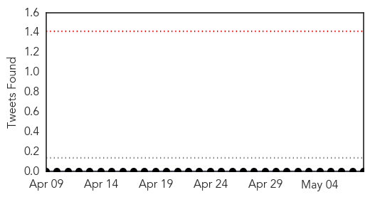
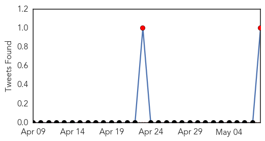

Measles
30-Day Web Trend
0 alerts, 0 warnings

30-Day Twitter Trend
0 alerts, 0 warnings

Article Locations
Article Confidences
Top Articles:
- 0.983
- Liberia’s Measles Outbreak: Gov't on Massive Immunization
- 0.975
- North Devon parents told to protect children following two confirmed measles cases
- 0.884
- 10 Counties Hit by Measles Outbreak
- 0.823
- Gov’t Launches Measles Campaign
- 0.792
- TRAVELLERS REMINDED TO HAVE MEASLES VACCINATION
- 0.757
- Low vaccination rates at schools put students at risk
- 0.723
- The 'V' word still a hot topic: 6 things to know as state proposes tougher vaccine rules for children
- 0.677
- Measles Vaccination Could Have Benefits against Other Infections
- 0.635
- UNICEF and EU begin airlift humanitarian supplies to Nepal
- 0.628
- Robert Kennedy Jr. Blasts Vaccine Science, Compares It To Tobacco Companies Denying Cancer Link
- 0.621
- Pilot whale beaches at KSC
- 0.574
- Measles Weaken Immune System for Up to 3 Years
- 0.562
- Scientists uncover new secret on measles vaccine
Top Tweets:
-
No tweets found for May 08, 2015
Swine Flu
30-Day Web Trend
0 alerts, 0 warnings

30-Day Twitter Trend
2 alerts, 0 warnings

Article Locations

Article Confidences
Top Articles:
Top Tweets:
- 0.592
- The use of disease names such as ‘swine flu’ has stigmatized certain communities or economic sectors